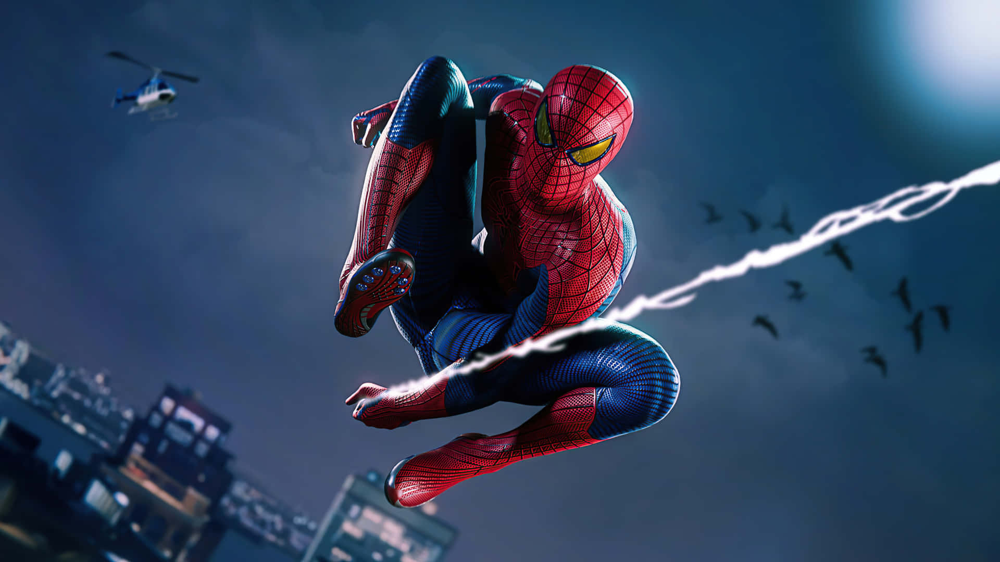

Human Torch
We all think Captain America was the first Marvel hero, but you'll be suprised to know that The Human Torch in 1939 was the first superhero. Our favourite Cap wasn't born until 1941.

Iron Man
The first Marvel Cinematic Univerese film was Iron Man in 2008, starring Robert Downey Jr., Jeff Bridges and Gwyneth Paltrow that had a gross earning of $585.2 milion.

Spider-Man
We see different spellings of our superhero, but according to Stan Lee, it's Spider-Man in order to separate him from Superman who in print could have a similar name.
Hulk
In Marvel Comics, Hulk, Bruce Banner appeared as a grey-skinned Hulk, but was made green after the issues came in printing, the grey tone would come diffrently in the printing process.